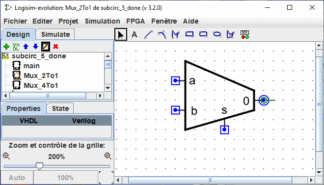
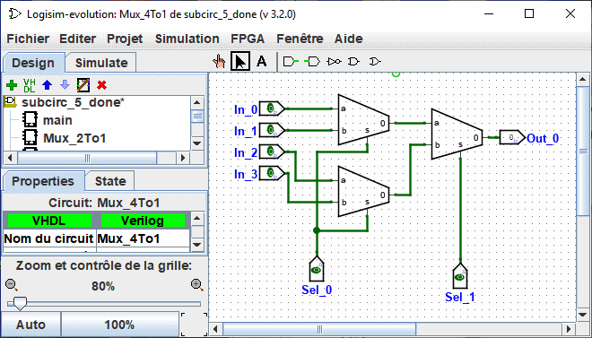
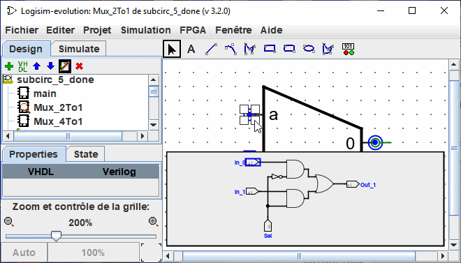

Personnaliser l'apparence
L'apparence par défaut est très utilisée et existe dans Logisim depuis de nombreuses années sans autres options. Si, toutefois, vous préférez que le sous-circuit soit dessiné différemment, vous pouvez sélectionner le menu | Projet |→| Editer l’apparence du circuit | et Logisim passera de l'interface "édition du dessin" à l'interface "édition de l'apparence" du circuit. Vous pouvez également cliquer sur l'icône à l'extrême droite ( ) de la barre d'outils de l'explorateur.
) de la barre d'outils de l'explorateur.
Ci-dessous, nous modifions l’aspect du multiplexeur 2:1 pour qu’il soit dessiné avec un trapèze habituel plutôt qu'un rectangle.

En modifiant l'apparence du multiplexeur 2:1 dessiné ci-dessus, vous allez devoir probablement devoir réajuster le câblage des circuits qui utilisent le multiplexeur. Après cela, la disposition du multiplexeur 4:1 se présente naturellement comme suit.

L'éditeur d'apparence se présente comme un programme de dessin traditionnel, mais il utilise quelques symboles spéciaux pour préciser certains paramètres du dessin du sous-circuit utilisé lorsqu'ils sont placés dans le dessin d'un circuit. Ces symboles spéciaux ne peuvent pas être supprimés.
-
Un cercle vert avec une ligne sortante, que nous appellerons ancre (
 ). Il y a exactement une ancre dans chaque apparence d'un sous-circuit. Chaque composant d'un circuit a un seul point pour identifier sa position sur le dessin; un utilisateur observe cela lors de la création d'un nouveau composant: le clic de la souris identifie un seul point de l'écran et le composant est placé par rapport à ce point. L'ancre sera alignée avec ce point du dessin global lorsque le sous-circuit est créé et dessiné.
). Il y a exactement une ancre dans chaque apparence d'un sous-circuit. Chaque composant d'un circuit a un seul point pour identifier sa position sur le dessin; un utilisateur observe cela lors de la création d'un nouveau composant: le clic de la souris identifie un seul point de l'écran et le composant est placé par rapport à ce point. L'ancre sera alignée avec ce point du dessin global lorsque le sous-circuit est créé et dessiné.
L'ancre indique aussi l'orientation du composant quand il est inséré dans le dessin, elle en est le centre de rotation. L'orientation est indiquée par la direction de la ligne qui pointe du cercle. Dans le dessin du sous-circuit, il est possible de modifier l'orientation de l'ancre dans les propriétés. Cela indiquera quelle orientation aura le symbole quand on le dépose sur un circuit. Dans notre exemple l'ancre du sous-circuit Mux_2to1 est orientée à l'est et chaque instance du sous-circuit multiplexeur est également face à l'est dans le dessin du sous-circuit Mux_4to1
-
Les cercles bleus (
 ) et les carrés avec un point (
) et les carrés avec un point ( ) sont les connexions du sous-circuit. Il y a exactement autant de symboles que de broche d'entrée et de sorties. Les connexions en entrée sont indiquées par des carrés et les connexions en sortie par des cercles. Chaque symbole indique comment un fil se connectant au circuit correspondra à une broche d'entrée ou de sortie dans la mise en page.
) sont les connexions du sous-circuit. Il y a exactement autant de symboles que de broche d'entrée et de sorties. Les connexions en entrée sont indiquées par des carrés et les connexions en sortie par des cercles. Chaque symbole indique comment un fil se connectant au circuit correspondra à une broche d'entrée ou de sortie dans la mise en page.
Lorsque vous sélectionnez une connexion, Logisim indiquera la broche correspondante en faisant apparaitre un diagramme miniature de la disposition dans une fenêtre en bas à droite et la broche correspondante dessinée en bleu. Cela ne se fait pas si toutes les connexions sont sélectionnées.

Nous pouvons modifier le zoom de l'image avec un Ctrl+Molette Souris ou à l'aide des boutons loupe ou du curseur en bas sur la gauche de l'espace de travail. Le taux est affiché.
La barre d'outils contient des outils pour ajouter des formes supplémentaires, comme indiqué ci-dessous. Certaines touches (Ctrl,Alt,Maj) ont un effet sur la manière dont les figures sont dessinées. Ces touches peuvent se combiner entre elles.
Ctrl: aligne les points de terminaisons sur la grille.
Maj: oriente les lignes sur un angle multiple de 45° ou rend symétrique les figures (Carré, Carré arrondi,Cercle)
Alt: dessine les figures depuis leur centre.
Ci-dessous une petite présentation de chaque outil.

|
Outil Sélection : Sélectionne, déplace, copie, colle les symboles. |

|
Outil Text : Insert ou édite un text. |

|
Outil Ligne : Crée un segment de ligne. |

|
Outil Courbe : Crée une courbe de Bezier. Le premier clic et glisser spécifie le début de la ligne, le second clic et glisser termine la ligne et définit la courbure. Un clic sur la ligne vous montre les trois points de contrôle. Maj et clic sur point central de contrôle imposent une courbe symétrique. Alt et clic sur point central dessine la courbe au travers du point de contrôle (sous la souris). |

|
Outil Polylignes : Crée une séquence de lignes connectées, chaque clic commence une nouvelle ligne. Un double-clic termine la séquence. |

|
Outil rectangle : Crée un rectangle ou un carré (Maj) en glissant depuis un angle vers l'angle opposé. |

|
Outil rectangle : Crée un rectangle ou un carré (Maj) à bord arrondi en glissant depuis un angle vers l'angle opposé. |

|
Outil ovale : Crée un ovale ou un cercle (Maj) en glissant depuis d'un coin de son contour vers l'angle opposé. |

|
Outil polygone : Crée un polygone, chaque clic commence un nouveau coté. Un double-clic termine la séquence. |

|
Composants dynamiques Place un composant dynamique. click ouvre une fenêtre pour la sélection des composants dans les sous-circuits. |
Suite: Deboguer un sous-circuit.